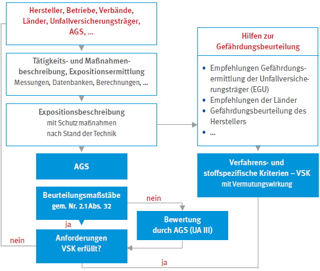

Die Europäischen Richtlinien* zum Schutz gegen Gefährdungen bei Tätigkeiten mit Gefahrstoffen, sowie die Verordnungen** zur Einstufung, Kennzeichnung und Verpackung gefährlicher Stoffe und Gemische (einschließlich deren Anhänge) und zur Registrierung, Bewertung, Zulassung und Beschränkung chemischer Stoffe (REACH) werden in Deutschland in der Gesetzgebung und dem Regelwerk der Unfallversicherungsträger umgesetzt bzw. sind unmittelbar geltendes Recht.
Das Arbeitsschutzgesetz (ArbSchG) [1], das Chemikaliengesetz (ChemG) [2] und das Siebte Buch Sozialgesetzbuch (SGB VII) [3] werden in der Gefahrstoffverordnung (GefStoffV) [4] und den zugehörigen Technischen Regeln für Gefahrstoffe (TRGS) konkretisiert sowie durch DGUV Vorschriften, Regeln und Informationen erläutert.
Die GefStoffV verpflichtet die Arbeitgeber und Arbeitgeberinnen unter anderem, in der Gefährdungsbeurteilung Art und Ausmaß der Exposition der Beschäftigten zu bewerten. Dies kann durch Arbeitsplatzmessungen oder gleichwertige, auch nichtmesstechnische Ermittlungsverfahren erfolgen. Wurden Gefährdungen erkannt und beurteilt können entsprechend dem Schutzziel – z. B. Arbeitsbedingungen der Beschäftigten sicherheits- und gesundheitsgerecht gestalten – Schutzmaßnahmen ergriffen werden.
EGU nach GefStoffV sind eine Hilfe bei der Gefährdungsbeurteilung für Tätigkeiten mit Gefahrstoffen, da sie entsprechend der TRGS 400 Gefährdungsbeurteilung [5] als Handlungsempfehlung Dritter mit herangezogen werden können. Für die Erstellung einer EGU ermittelt qualifiziertes Personal anhand geeigneter tätigkeits- und stoffbezogener Methoden und Messverfahren bei gleichartigen Tätigkeiten (gleichartige Arbeitsbedingungen und vergleichbare Arbeitsplätze), ob Gefahrstoffe freigesetzt und Beschäftigte exponiert werden können.
Dadurch können EGU als nichtmesstechnisches Verfahren bei der Informationsermittlung und Durchführung der Expositionsbewertung nach TRGS 401 – Gefährdung durch Hautkontakt – Ermittlung, Beurteilung, Maßnahmen [6] sowie der TRGS 402 – Ermitteln und Beurteilen der Gefährdungen bei Tätigkeiten mit Gefahrstoffen: Inhalative Exposition [7] verwendet werden. Durch die Übertragung der Ergebnisse für vergleichbare Tätigkeiten können Unternehmen den eigenen Ermittlungsaufwand erheblich reduzieren, insbesondere, wenn eigene messtechnische Ermittlungen ganz entfallen.
EGU können vom Ausschuss für Gefahrstoffe (AGS) in die TRGS 420 – Verfahrens- und stoffspezifische Kriterien (VSK) für die Ermittlung und Beurteilung der inhalativen Exposition [8] aufgenommen werden. Zur Aufnahme von EGU in die TRGS 420 gilt das folgende Ablaufschema:

Abb. 1 Aufstellung von VSK – Ablaufschema
Für in der TRGS 420 aufgeführte EGU gilt die Vermutungswirkung der GefStoffV. Dies bedeutet, dass die Anforderungen der GefStoffV zur Minimierung der inhalativen Exposition hinsichtlich der zu treffenden Maßnahmen und der Wirksamkeitskontrollen erfüllt sind bei:
Des Weiteren sind eigene Arbeitsplatzmessungen oder andere gleichwertige Beurteilungsverfahren (Nachweisverfahren) für die in der EGU beschriebenen Arbeitsplätze und Tätigkeiten in der Regel nicht erforderlich wenn:
Darüber hinaus können EGU für die eigene Ermittlung des Standes der Technik im Betrieb nach der TRGS 460 genutzt und weitere Methoden zur Wirksamkeitsprüfung bei Bedarf festgelegt werden.